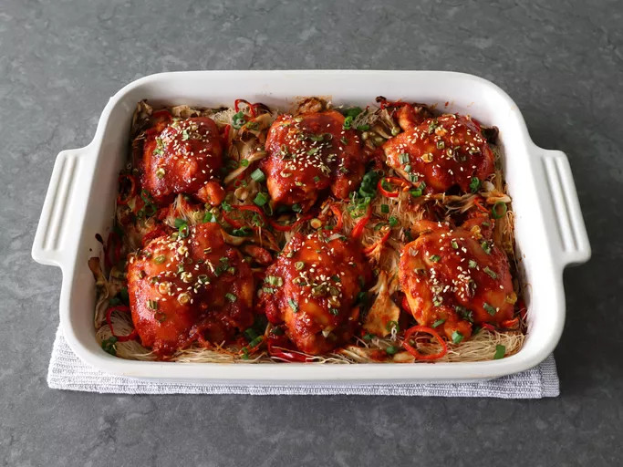

Korean Spicy Chicken Rice Noodle Bake

Description
This Korean spicy chicken rice noodle bake is not only my new favorite spicy chicken, it’s also my new favorite way to cook rice noodles. Chicken is marinated briefly in a gochujang marinade, then dry rice vermicelli goes directly into the baking dish, chicken thighs are placed on top, and the dish bakes quickly to perfection. As a bonus, the leftovers can be served cold on greens for an amazing salad.
Ingredients
Marinade
- 1 tablespoon finely minced fresh ginger
- 4 cloves garlic, minced
- 1/4 cup rice vinegar
- 2 tablespoons light soy sauce
- 1 teaspoon kosher salt
- 1 tablespoon brown sugar
- 1/4 cup ketchup
- 1 teaspoon sesame oil
- 2 tablespoons gochujang (Korean chili paste), or more to taste
Bake
- 6 large skinless boneless chicken thighs
- 1 teaspoon sesame oil for greasing baking dish
- 8 ounces vermicelli rice noodles
- 2 cups hen of the woods mushrooms, or sliced brown mushrooms
- 1/2 cup sliced Fresno chili peppers, or any other peppers
- 1 cup sliced green onions, divided
- 1 1/4 cups chicken broth
Dressing
- 1/4 cup rice vinegar
- 2 tablespoons sesame oil
- 2 tablespoons toasted sesame seeds for garnish (optional)
Steps
- Add ginger and garlic to a mixing bowl, and pour over the 1/4 cup rice vinegar. Let sit for 30 seconds, then whisk in soy sauce, salt, brown sugar, ketchup, the 1 teaspoon sesame oil, and gochujang.
- Add chicken thighs to marinade. Toss and turn until thoroughly coated. Cover and marinate in the refrigerator, at least 1 hour and up to 8 hours.
- Preheat the oven to 425 degrees F (220 degrees C). Grease a 9x13-inch casserole dish with 1 teaspoon sesame oil.
- Lay rice vermicelli in the dish, pulling the dry noodles apart as you do, to cover the bottom evenly, breaking off sections of noodle as needed.
- Evenly scatter over mushrooms, peppers, and about half the green onions. Top with marinated chicken thighs, smooth side up. Spoon excess marinade on top of chicken.
- Rinse marinade bowl with chicken broth and pour into the bottom of dish, without rinsing marinade off chicken. Top with a few tablespoons of green onions.
- Bake in the preheated oven until chicken is no longer pink at the center and juices run clear, 30 to 35 minutes. An instant-read thermometer inserted near the center should read 165 degrees F (74 degrees C).
- Remove chicken to a plate. Toss noodles and veggies in pan until evenly combined. Add the remaining 1/4 cup rice vinegar and 2 tablespoons sesame oil; toss one last time. Taste for seasoning.
- Serve chicken over noodles; sprinkle with sesame seeds and more green onions.